DATA_BASH 2026 · 5. Dezember 2026 · onlineDATA_BASH 2026 · 5 December 2026 · onlineFabric Apps · Controlling · Finance
<# The Playbook #>$talk=@{Spec ="app-spec.json"Targets =@("Fabric App","Power BI (PBIP)")Visuals =@("ChartKitchen 1.58","P&L Statement 1.8.4")Notation="IBCS-inspired"}
Ein Playbook für IBCS-inspirierte, reproduzierbare Fabric Apps
A Playbook for Generating IBCS-Inspired Reproducible Fabric Apps
für Controlling und Finance. Eine Spec, zwei Ziele, dieselben Visuals. Und ein Standard als Leitplanke, wenn KI alles bauen kann.
Michael Tenner · Daten-WG by platformimpulse · Köln
datenwgknowledgekitchen.com45 min · Live-Demo
Wer hier sprichtDaten-WG Knowledge Kitchen
Michael Tenner
Full Stack Power BI Engineer · Daten-WG by platformimpulse
Finance- und Controlling-Reporting auf Power BI und Fabric. Baut die offenen Visuals ChartKitchen und P&L Statement byDatenWG, die dwg cli und MockupKitchen und schreibt die Daten-WG Knowledge Kitchen.
Fabric Apps glänzen. Finance braucht ein Arbeitspferd.
React-Code, gehostet in Fabric, mit Entra-Anmeldung und Live-DAX gegen das Semantikmodell. Ein Coding-Agent baut so eine App in Stunden. Das ist die Chance, und das Risiko.
Finance-Cockpit · AC gegen PY/PL/FC
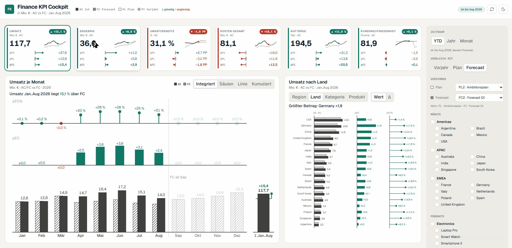
Vertrieb · Zoom in Small Multiples
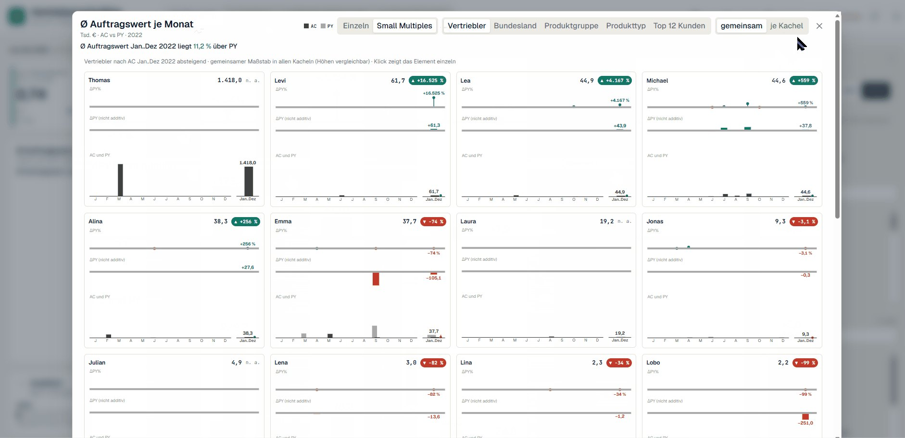
Was eine App mehr kann
Zoom in Small Multiples, Details auf Abruf
Eigene Navigation, eigener Rahmen, Handy, Dunkelmodus
Abläufe: Kommentare, Freigaben, Rückschreiben
Was sie heute kostet
Preview, nicht in jeder Region, Leser brauchen Build-Recht aufs Modell
App-Code fehlt in der Fabric-Git-Synchronisierung
Logik wandert aus dem Modell in den App-Code
Bilder: eigene Demo-Apps auf synthetischen Daten, mit Coding-Agenten gebaut (Oktober 2026)learn.microsoft.com/fabric/apps
Wenn KI alles bauen kann
Standards werden wichtiger in einer Welt, in der alles geht
Ohne Standard
Jeder Prompt, eine neue Diagrammsprache
Plan blau auf Seite 1, grün auf Seite 2
Jedes Diagramm eigen skaliert: klein wirkt groß
Kostenüberschreitung in Grün
Review heißt Pixel prüfen, mit dem Auge
→
Mit Standard
Regeln, die eine Maschine prüfen kann
Notation: ein Aussehen je Szenario, überall
Skalierung: gleiche Einheit, gleiche Pixel über die Seite
Polarität: weniger Kosten ist gut
Aussage: ein Satz über jedem Diagramm
AC IstPY VorjahrPL PlanFC Forecastgutschlecht
Der Agent schreibt die Spec. Das Visual erzwingt die Notation. Ein Test misst es.Leitplanke, keine Deko
Die Notation hat einen Namen
IBCS auf einer Seite
Die SUCCESS-Regeln. Nicht Mitglied, nicht zertifiziert: Inspiration, die Notation wörtlich genommen.
NotationNotation· Simplify · Unify · Check
Aufbau· Say · Express · Structure · Condense
SSimplifykein Ballast, keine Deko, kein 3D
UUnifydie Notation: Szenarien, Abweichungen, Zeit, Struktur
CCheckIntegrität: gleiche Skala, keine abgeschnittenen Achsen
SSayeine Botschaft je Seite, als Satz
EExpressder passende Diagrammtyp zur Frage
SStructureeinheitlich, hierarchisch, MECE
CCondensemehr Information je Seite, Small Multiples
SUCCESS-Karten nach den IBCS®-Standards 2.0 der IBCS Association, CC BY-SA 4.0 (ibcs.com/standards); diese Folie steht unter derselben Lizenz · IBCS® ist eine eingetragene Marke des IBCS InstituteIBCS 2.0 ist an ISO 24896 ausgerichtet
Das Playbook
Eine Spec, zwei Ziele, dieselben Visuals
dwg cli 0.1, öffentlich entwickelt: github.com/Losveratos/dwg-cli · MITAgenten und Menschen nutzen dieselben Befehle
Schritt 1 · MockupKitchen
Start im Workshop, nicht auf der leeren Leinwand
Der Fachbereich skizziert die Seite mit dir. Heraus kommt kein Bild, sondern eine maschinenlesbare Spec: Templates, Rollen, Polarität, Sortierung.
Skizze · MockupKitchen im Browser
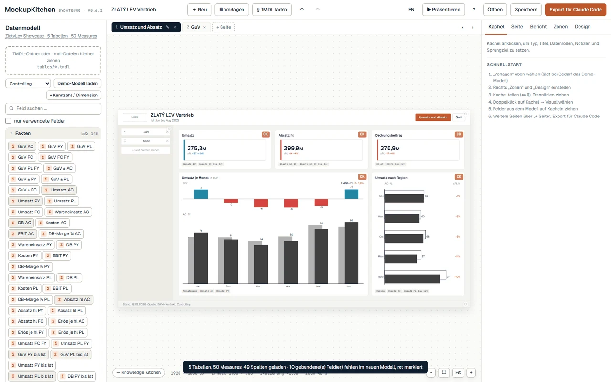
Erzeugt · dwg mockup import → App-Seite
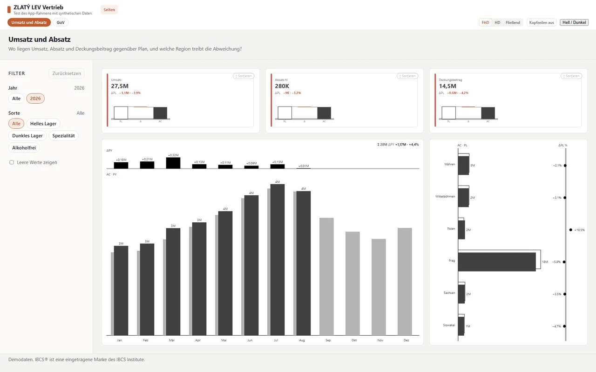
MockupKitchen 0.9: Zielmodus Fabric App oder Power BI, App-Vorlagen, Handy, Arbeitsbereich „Visual einrichten“datenwgknowledgekitchen.com/mockup-kitchen.html
Schritt 2 · die Spec
Die Spec ist Text: prüfbar, versioniert, für Agenten lesbar
Power BI · dieselbe Spec als PBIR, im Service, Direct Lake
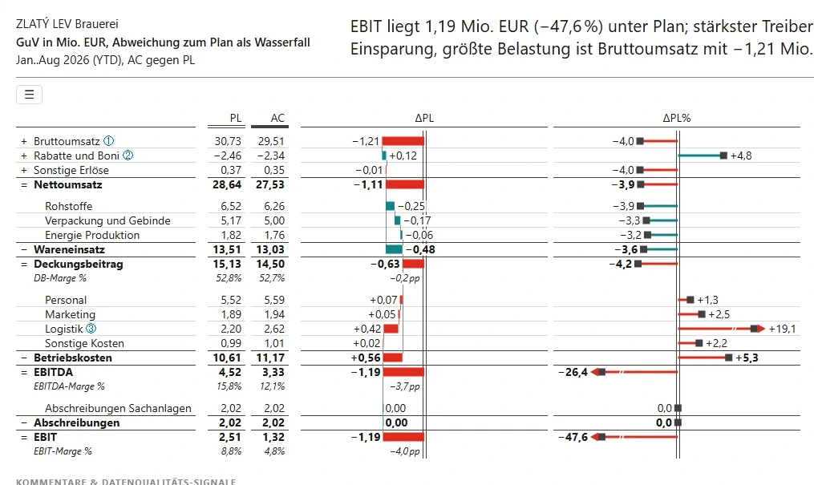
Gleiche Zahlen, gleicher Satz: EBIT 1,19 Mio. EUR (−47,6 %) unter Plan. Der Paritätstest rendert jede Kachel so, wie Power BI dem Visual die Daten übergibt, und so, wie die App es tut, und schlägt fehl, wenn sie abweichen.
Template T04B · GuV mit Planabweichung als integriertem Wasserfall · synthetische BrauereidatenAufgenommen 26.11.2026
Jetzt live
Demo
1 · MockupKitchen
Skizze zur Spec
Seite im Zielmodus Fabric App skizzieren, exportieren, dwg mockup import
2 · dwg live build
Spec zu App und PBIP
Drei Kacheln aus dem Katalog, Felder aus dem Modell. App-Seite lokal mit Mini-DAX gerendert, dieselben Seiten als PBIP, validiert.
3 · Showcase
47 Templates, live
Fabric App „dwg cli Showcase“ und derselbe Bericht in Power BI auf Direct Lake: filtern, querfiltern, sortieren, zoomen.
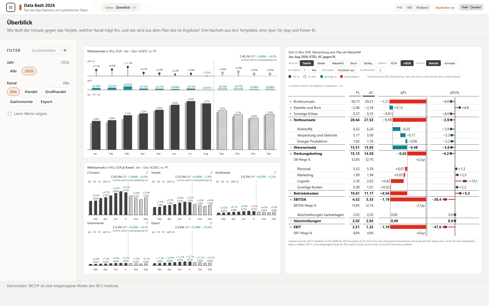
Ergebnis Live-Build · A1MockupKitchen → dwg
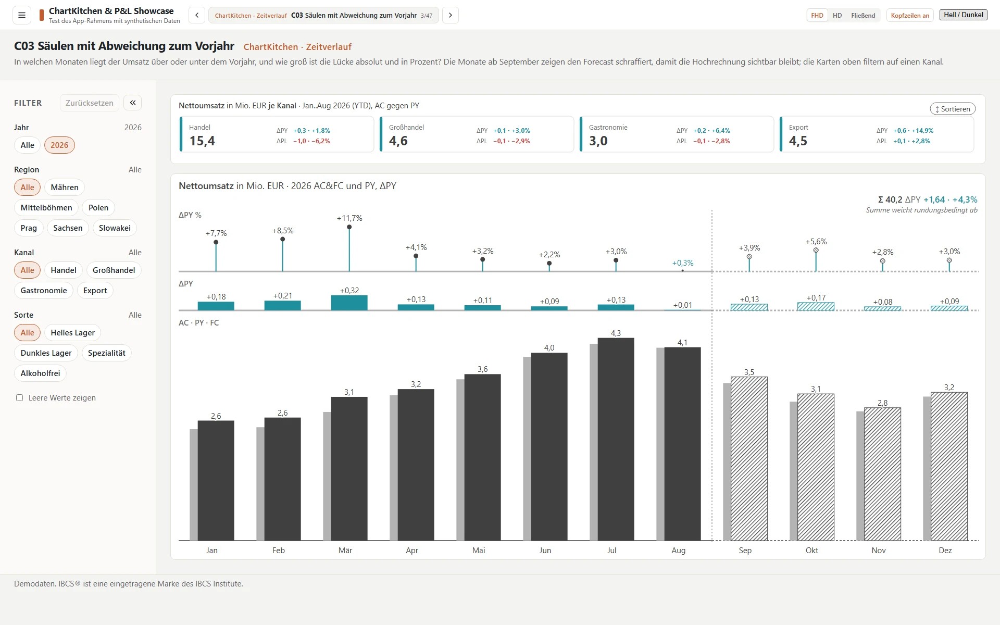
C03 · Säulen mit ΔPY
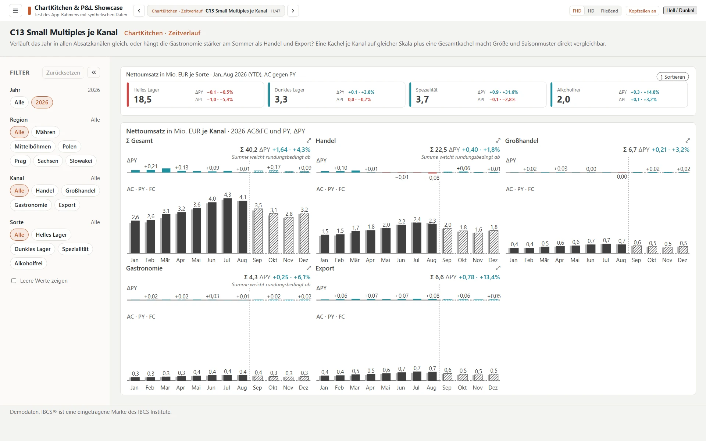
C13 · Small Multiples
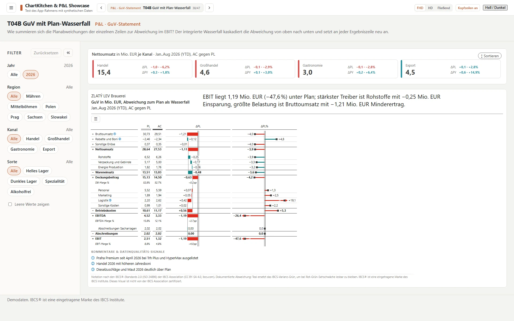
T04B · App
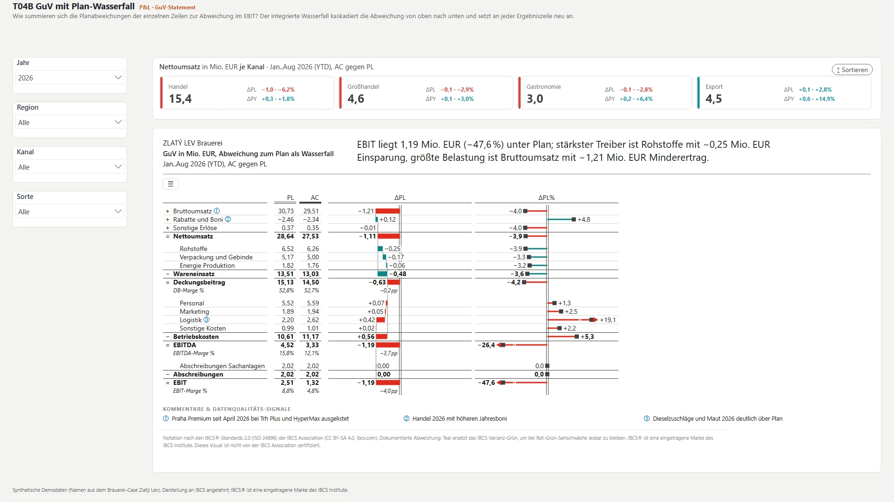
T04B · Power BI
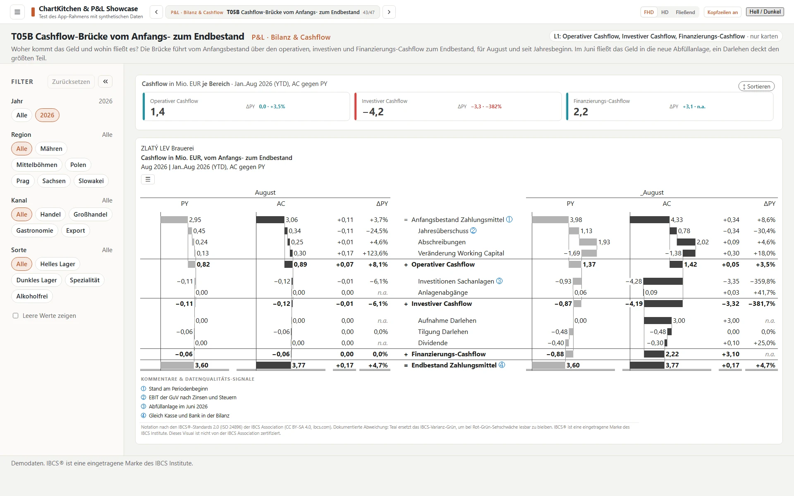
T05B · Cashflow
Falls das Netz streikt: Anhang A1 bis A4 zeigt Live-Build und Showcase als Bildergithub.com/Losveratos/Data-Bash-2026
Prüfstand
47 Templates, gemessen statt behauptet
Jedes Template gegen sein Vorlagenblatt, die App und Power BI. Ein Modell urteilt, ein zweites prüft gegen. Stand ChartKitchen 1.58, P&L 1.8.4.
Alle 47 App-Seiten · aus einer Spec erzeugt, von der Testsuite gerendert
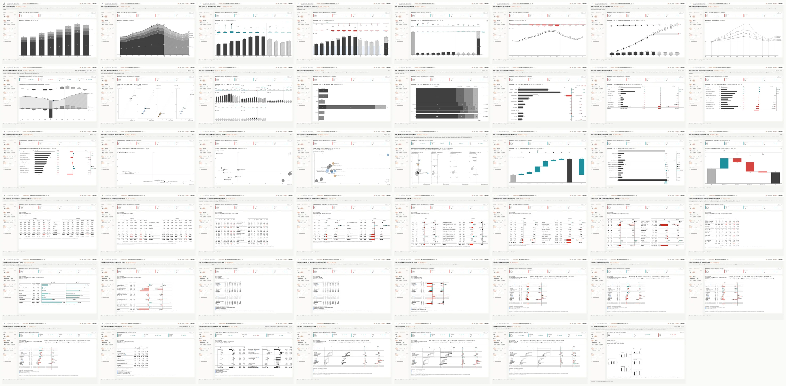
24von 39 Templates mit Blatt vollständig
15teilweise, 0 fehlen im Kern
282/282Visual-Abfragen im Power-BI-Bericht ohne Fehler
1,2 bis 1,8 sje Seite warm, rund 13 s für die erste kalt
Was es mir gezeigt hat
Meine eigene Abdeckungsnotiz sagte „alle 62 Blätter“. Gemessen waren 16 nur teilweise.
Welle 1 hat elf Notationsfehler an einem Tag behoben. Ein Template mehr vollständig, Ziel 26 verfehlt.
Notation richten geht schnell. Fehlende Fähigkeiten sind die eigentliche Arbeit.
Vorlagenblätter bleiben lokal (Lizenz ungeklärt) und werden nicht gezeigt · IBCS als Bezug, keine ZertifizierungPower-BI-Zeiten gemessen am 26.11.2026
Wer welche Regel trägt
Die App rechnet nichts selbst
Jede Schicht hat eine Aufgabe, und jede Aufgabe hat eine Prüfung, die ohne Pixelgucken läuft.
Dieselbe Regel wie im Budapest-Vortrag: Regeln ins Modell, Visual je Zielgruppe wählenLogik im App-Code ist das Fabric-Apps-Risiko
fabscan
Eine App ist Code. Code braucht einen Prüfer.
Heute früh · fabscan über mein eigenes Demo-Repository
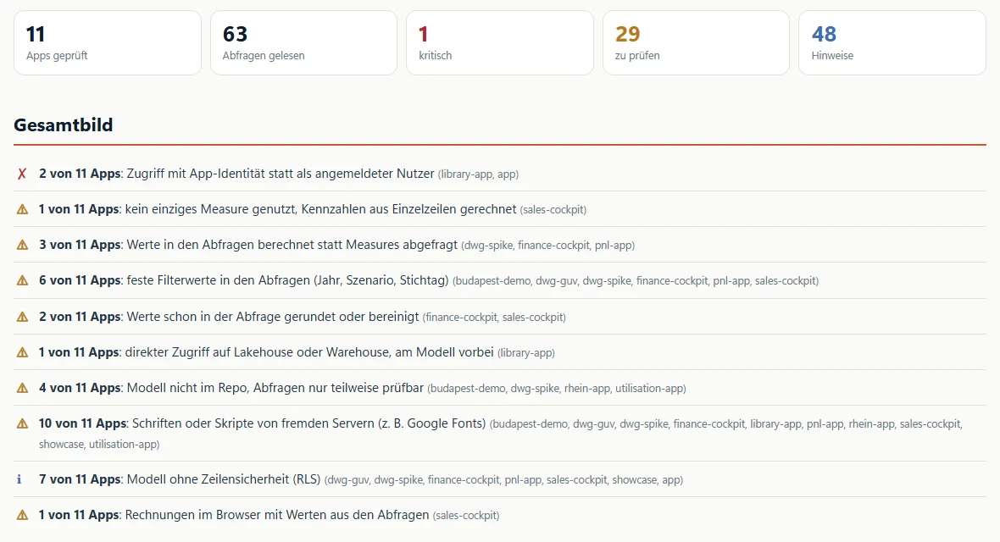
11Apps, 63 Abfragen gelesen
10von 11 laden Schriften oder Skripte von fremden Servern
6mit festen Filterwerten in den Abfragen
1rechnet jede Kennzahl aus Einzelzeilen, ohne Measure
Fünf Fragen, nur lesend
Berechnungen in der App · Lineage-Brüche · Sicherheitsrisiken · veränderte Abfragen · Abweichungen zum Modell
dwg schreibt fabscan.json je App: feste Filter werden als Chip sichtbar
Python ohne Abhängigkeiten, Skill für Claude, Exit-Code für CI
Die Apps haben Agenten gebaut, mit mir, in bester Absicht. Genau deshalb.fabric-app-scanner im Kitchen-Repository
Ehrliche Roadmap
Was noch fehlt
WELLE 1 · LIVE
Notation richtig
FC-Pinköpfe schraffiert statt hohl
Abweichungsachse nach Basis: Doppellinie bei PL
Gerundete Null ohne Vorzeichen
CK 1.58 · P&L 1.8.4
WELLE 2
Beweisen statt behaupten
Zweite Spec, die jedes Blatt mit seinen Zahlen nachbaut
Bild gegen Bild im Prüfstand
Spec und Daten
WELLE 3
Fehlende Fähigkeiten
Hervorhebung an Einzelelementen statt ganzer Zeilen
Berichtsmonat wählbar
Small Multiples als echtes Raster
12 Templates vollständig
WELLE 4
Die großen Brocken
Microsoft-Zertifizierung: ohne sie kein PDF, PowerPoint, Abo
Tausende Kategorien, Direct Lake kalt
Wochen, nicht Tage
Als Nächstes in der CLI: Notationsregeln als Prüfung, die den Deploy sperrt, eine seitenweite Skala über Kacheln, die App bezieht die Visuals direkt aus dem Release. Bei Fabric Apps selbst: Git-Sync, Pro/PPU, Regionen.
Plan aus dem Prüfstand, Stand 24.11.2026Keine Terminzusagen
Zum Mitnehmen
Vier Dinge für Montag
1 · Regeln ins Modell
Vorzeichen, Jahreswert als Skalar, Zeitfenster, RLS. Dann ist jedes Frontend austauschbar, App oder Bericht.
2 · Notation ins Visual, nicht in den Prompt
Ein Agent vergisst die Schraffur. Ein Visual nicht.
3 · Spec vor Code
Mit dem Fachbereich skizzieren, die Spec in Git, App und Bericht daraus erzeugen.
4 · Messen und scannen
Prüfstand für die Notation, Paritätstest für die Zahlen, fabscan für den App-Code.